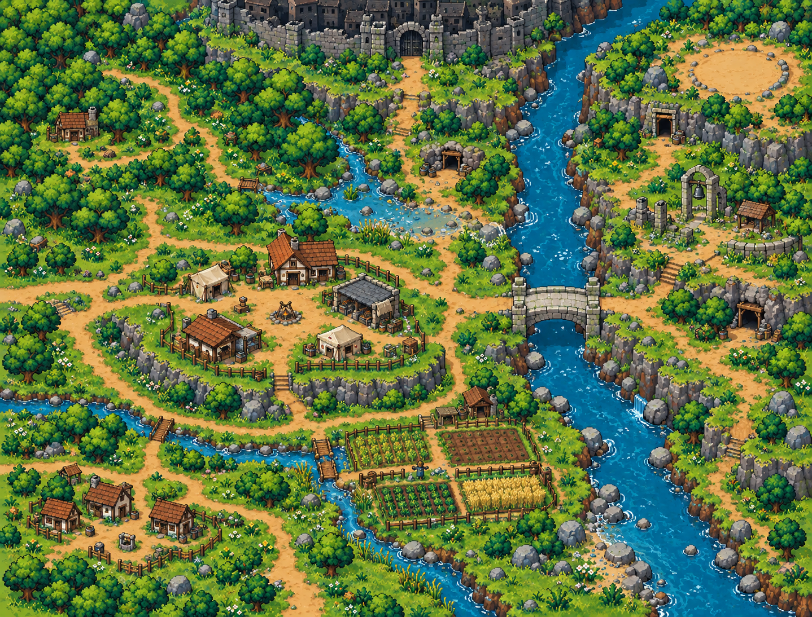

Bình Minh · Concept bố trí r002
Map 1 cấp1–10 · vẽ môi trường theo sơ đồ, chưa dựng game.
Concept, không phải tilemap/greybox. Ghim là chú thích gần đúng trên ảnh mới, không tọa độ engine. Lưới12ô chỉ giúp trao đổi bố trí, không phải12chunk streaming. Các lối trên ảnh cần kiểm lại collision/cao độ trước khi chốt.


Nhà Đèn/intro và hậu biến cố dùng lớp truyện riêng. Tranh tổng thể không phải bằng chứng hai trạng thái cùng tồn tại trong game.
| Đã có | Chưa có | Bước tiếp |
|---|---|---|
| Concept môi trường, tên khu,12ô bố trí và đặc tả đường/cầu/dốc. | Tile native, navmesh và gameplay hoàn chỉnh. Greybox riêng đã có bản thử. | Đi thử greybox r001 để kiểm bố trí trước khi làm tile/đạo cụ. |